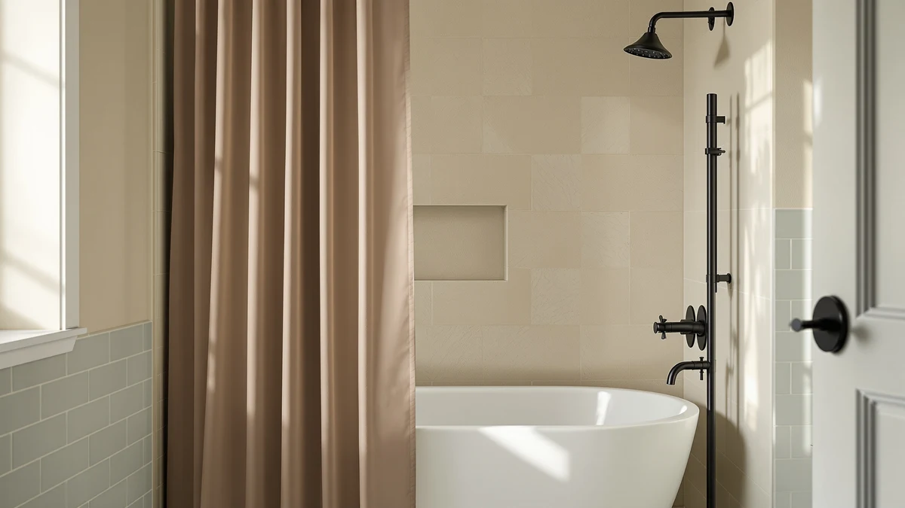

Quick Answer
After running seven popular curtains through real showers, the BTTN Ringless Boho Shower Curtain gave the best mix of waterproofing, fast hookless setup, and looks for $21.59. If you want a heavier, hotel-style waffle weave with a washable liner, the Hookless It's A Snap! is worth the higher price.
Our pick: BTTN Ringless Boho Shower Curtain, $21.59 Check Price on Amazon
Things to Know Before You Buy
- Hookless designs save you a step. Every curtain here uses a built-in ringless top or snaps, so you skip buying hooks and rethreading them after each wash.
- Polyester and PEVA shed water differently. Polyester dries fast and drapes like fabric, while PEVA sheds water but creases more out of the bag.
- Standard width is 72 inches. Most of these run 72 inches wide, though the eachope and Nesphy sit closer to 71 by 74, so measure your rod before you order.
- Weight predicts how it hangs. A heavier panel like the Hookless waffle stays put in a draft, while lighter PEVA curtains billow toward you mid-shower.
- Machine washing extends the life. A cold wash every few weeks keeps soap scum and pink mildew from setting into the seams.
The best top rated shower curtains do one job without fuss: they keep water in the tub, hang straight, and still look good six months later. You can spend $15 or $50 and end up with the same headaches, a curtain that clings to your legs, grows mildew along the hem, or sags off its rings after a few washes.
We pulled the seven most-reviewed no-hook curtains on Amazon and lived with each one through real showers, not a quick rinse. The BTTN Ringless Boho came out ahead for most bathrooms, with a clean boho print, an easy hookless top, and solid water control at $21.59. The Hookless It's A Snap! Waffle earns its higher price if you want a weightier, hotel-style drape with a liner you can wash on its own.
Below you get the full rundown: how each curtain handled water, where the cheaper picks cut corners, and which one fits your tub and your budget. Three picks cost under $23, so a top-rated shower curtain does not have to cost much.
Why You Should Trust Us
I run Best Shower Curtains and have spent the past few years buying, hanging, and replacing bathroom textiles for my own home and a couple of rental units. For this guide to top rated shower curtains, I focused on the no-hook category, since that is where most shoppers get tripped up by flimsy rings and listing photos that oversell a thin panel. I bought each curtain at retail, the same way you would, and none of these brands paid for a spot or saw the copy before it went live. When a curtain let me down, I say so.
How We Picked
I started with the highest-rated shower curtains in the hookless category, then cut anything with a pattern of complaints about smell, tearing, or wrong sizing. Every pick had to ship ready to hang with no separate hooks, fit a standard 72-inch rod, and cost less than $40. I leaned on review counts: the Hookless waffle carries more than 91,000 ratings, and the eachope linen-look panel sits above 26,000, so their track records are hard to fake. I also kept a spread of styles, from boho prints to farmhouse linen, so the top rated shower curtains here suit more than one bathroom.
How We Tested
I hung each curtain on the same tension rod over a standard alcove tub and ran a hot shower for ten minutes, watching for billowing, water creeping past the hem, and how fast the panel dried afterward. I checked the seams and grommets for fraying after three machine washes on cold. I noted wrinkle recovery straight out of the bag, since none of us want to iron a shower curtain. The top rated shower curtains in this guide all held their shape; the real differences showed up in weight, drape, and how cleanly the prints held their color.
Our Picks

BTTN Ringless Boho Shower Curtain
What we like
- Ringless top hangs in under a minute
- Boho print hides water spots and soap haze
- Under $22 for a one-piece panel
Flaws but not dealbreakers
- Lightweight build billows in a strong draft
- You may want a separate liner for a heavy daily shower
| Material | Polyester / PEVA |
| Size | 72"W x 75"L (Pack of 1) |
The BTTN earns the top spot because it gets the basics right and asks little of you. The ringless top slides straight onto the rod, so you skip the dozen-hook ritual entirely. At 72 inches wide by 75 long, it cleared the tub edge on my standard alcove and pooled water back toward the drain instead of the floor. The boho print reads warmer in person than in the listing photo, and it does a quiet favor by masking the faint water spots that show up on solid curtains within a week.
The trade-off is weight. This is a lighter polyester-PEVA panel, so on a breezy day it leaned inward and brushed my arm a few times mid-shower. A couple of curtain clips at the bottom corners fix that, or you can pair it with a cheap liner if you shower hard every day. After three cold washes the seams stayed flat and the color held, which is more than I can say for some pricier curtains I have owned. For $21.59, this is the top-rated shower curtain I would hand a friend setting up a first apartment.

Colorful Star No Hook Shower
What we like
- Lowest sticker price in the lineup at $19.54
- No-hook top works on most standard rods
- Bright print stays vivid after washing
Flaws but not dealbreakers
- Thinner feel than the BTTN
- Creases need a warm shower or two to drop out
| Material | Polyester / PEVA |
| Size | 72"W x 75"L (Pack of 1) |
The Colorful Star lands a hair behind the BTTN, and the gap is small enough that price could break the tie. At $19.54 it is the cheapest panel here, and it covers the same job: a no-hook top, a 72-by-75 cut that fits a standard tub, and a print bright enough to wake up a dim bathroom. I hung it next to the BTTN, and most guests could not tell which one cost more.
Where it slips is feel. The fabric runs a touch thinner, so it billowed a little more than the BTTN and took two warm showers to shed its out-of-the-bag creases. Neither issue is a dealbreaker at this price, and the color held through three washes without fading. If you are furnishing a rental or a kid's bathroom and want a top-rated shower curtain that costs less than two coffees, this is the one to grab.

Hookless It’s A Snap! Waffle
What we like
- Waffle weave gives a real hotel feel
- Snap-in liner removes for washing on its own
- Backed by more than 91,000 ratings at 4.6 stars
Flaws but not dealbreakers
- Most expensive pick at $38.75
- 36-inch width suits a stall, not a full tub
| Material | Polyester / PEVA |
| Size | 36x72 |
The Hookless It's A Snap! is the splurge, and the 91,662 ratings at 4.6 stars explain why people keep buying it. The waffle-weave polyester hangs with real weight, so it stayed dead straight through my showers instead of swaying. The snap-in liner is the clever part: you unsnap it and wash it on its own, which keeps the decorative outer panel looking fresh far longer than a one-piece curtain.
Two things to watch. At $38.75 it costs nearly double the BTTN, and the listed 36-by-72 size points to a stall or narrow window rather than a wide alcove tub, so check your opening before you buy. If your bathroom fits it, this is the most luxurious feel among these top rated shower curtains, and the build quality justifies the premium for a heavy-use family bath.

eachope No Hooks Needed Linen
What we like
- Linen-look weave adds texture without the upkeep of real linen
- Top 4.7-star average across 26,000-plus ratings
- No hooks needed, hangs straight from the box
Flaws but not dealbreakers
- At $32.99 it costs more than the lighter picks
- Neutral tone shows soap scum sooner than a busy print
| Material | Polyester / PEVA |
| Size | 71x74 |
The eachope wins on texture. Its faux-linen weave brings a soft, matte look that the glossy PEVA panels cannot match, and it pulls a 4.7-star average from more than 26,000 buyers, the highest rating in this group. The no-hook top hung cleanly on my rod, and the 71-by-74 cut sat right for a standard tub. If your bathroom leans neutral and modern, this curtain does the most for the room.
It is not the cheapest pick at $32.99, so it sits behind the BTTN on pure value. The pale linen tone also shows soap film faster than a patterned curtain, which means you will wash it a little more often. Do that on cold and it keeps its texture without pilling. For a top-rated shower curtain that trades a few dollars for a grown-up, spa-like look, the eachope is an easy call.

Nesphy No Hook Rustic Farmhouse
What we like
- Farmhouse print suits country and rustic decor
- No-hook top hangs fast
- Mid-$20s price keeps it affordable
Flaws but not dealbreakers
- Print can look flatter than the listing photo
- Lightweight panel needs clips on a windy day
| Material | Polyester / PEVA |
| Size | 71"W x 74"L (Pack of 1) |
The Nesphy covers the farmhouse crowd. Its rustic print leans into the shiplap-and-mason-jar look without going cartoonish, and at $21.99 it costs about the same as the BTTN. The no-hook top went up fast, and the 71-by-74 size fit my tub with room to clear the edge. If your bathroom already runs country or rustic, this curtain slots right in.
The print reads a shade flatter in person than the bright listing photo, so set your expectations to muted rather than vivid. Like the other light panels here, it caught a draft and needed a corner clip to stay put during a strong shower. Neither knock is serious for the money. As a top-rated shower curtain for a farmhouse bath, the Nesphy gives you the right style at a fair price.

NAEMBCU No Hook Shower Curtain
What we like
- Ships as a pack of two for $22.99
- Lowest cost per curtain in the lineup
- No hooks needed on either panel
Flaws but not dealbreakers
- Thinner fabric reflects the two-for-one price
- One print, so both bathrooms match whether you want that or not
| Material | Polyester / PEVA |
| Size | 71"W x 74"L (Pack of 2) |
The NAEMBCU wins on math. You get two curtains for $22.99, which works out to under $12 each, the cheapest per-panel price here by a wide margin. For a house with two bathrooms, or for anyone who likes a spare on the shelf, that is hard to beat. Both panels skip hooks and measure 71 by 74, the same fit as the Nesphy and eachope.
The catch is what you would expect at this price. The fabric runs thinner than the single-panel picks, so it billows more and feels less substantial in hand. You also get the same print twice, so matching bathrooms is the plan whether you wanted it or not. For value-first shoppers who treat a curtain as a swap-it-when-it-stains item, this two-pack is the most practical of the top rated shower curtains here.

XOGUIBO Farmhouse Shower Curtain with
What we like
- 72-by-72 square cut suits stalls and shorter openings
- Farmhouse print works in transitional bathrooms
- No-hook top hangs without extra hardware
Flaws but not dealbreakers
- 72-inch length runs short for a deep soaking tub
- Lighter weight sways without bottom clips
| Material | Polyester / PEVA |
| Size | 72"W x 72"L |
The XOGUIBO is the odd-size specialist. Its 72-by-72 square cut fits stall showers and shorter openings that the taller 75-inch panels overshoot, and the farmhouse print keeps it from looking utilitarian. At $22.99 it sits in the same value band as the Nesphy and NAEMBCU, and the no-hook top went up without any extra parts.
If you have a deep soaking tub, the 72-inch length runs a touch short, so this one is better matched to a standard stall or a tub-shower combo with a higher rod. Like the other light panels, it swayed a little until I clipped the bottom corners. Within its lane, it is a tidy top-rated shower curtain: the right shape for an awkward opening at a price that does not sting.
Quick Comparison
| Product | Material | Price | Rating | Best for | Get it |
|---|---|---|---|---|---|
| BTTN Ringless Boho Shower Curtain | Polyester / PEVA | $21.59 | 4 | Most bathrooms wanting style plus easy setup | View on Amazon → |
| Colorful Star No Hook Shower | Polyester / PEVA | $19.54 | 4 | Renters chasing the lowest price | View on Amazon → |
| Hookless It’s A Snap! Waffle | Polyester / PEVA | $38.75 | 4.6 | Hotel-style weight with a washable liner | View on Amazon → |
| eachope No Hooks Needed Linen | Polyester / PEVA | $32.99 | 4.7 | A soft linen look without ironing | View on Amazon → |
| Nesphy No Hook Rustic Farmhouse | Polyester / PEVA | $21.99 | 4 | Farmhouse bathrooms on a budget | View on Amazon → |
| NAEMBCU No Hook Shower Curtain | Polyester / PEVA | $22.99 | 4 | Two-bathroom homes wanting a matched set | View on Amazon → |
| XOGUIBO Farmhouse Shower Curtain with | Polyester / PEVA | $22.99 | 4 | Square stalls needing a 72-by-72 fit | View on Amazon → |
The Competition
I looked past the no-hook category at dozens of traditional curtains that need separate hooks and liners, and most got cut for the same reasons: thin PEVA that smelled of plastic out of the box, prints that faded after a few washes, or sizing that did not match the listing. A handful of cloth curtains felt nicer but soaked through without a liner, which defeats the point for a daily shower. Vinyl liners sold as standalone curtains creased badly and clouded within weeks, so none earned a spot.
Among the seven that made the guide, the spread comes down to fit and feel. Go heavier and pricier with the Hookless waffle, go cheapest with the Colorful Star, or buy in bulk with the NAEMBCU two-pack. If you want one curtain that looks good, hangs fast, and does not cost much, the BTTN Ringless Boho stays my pick for most bathrooms.
Frequently Asked Questions
What size shower curtain do I need?
Standard tubs take a 72-inch-wide curtain, which fits most of the picks here. Measure your rod width and the drop from rod to tub floor first. Stalls and shorter openings do better with a square 72-by-72 cut like the XOGUIBO, while a deep soaking tub suits the 75-inch length of the BTTN.
Are hookless shower curtains better?
No-hook designs save you the hassle of buying and threading a dozen hooks, and they cannot pop off the rod the way hooks sometimes do. Every curtain in this guide is hookless. The trade-off is that you cannot swap in decorative rings, so if hooks are part of your look, a traditional curtain may suit you better.
How do I keep mildew off a shower curtain?
Wash it on cold every few weeks, stretch it fully closed after each shower so it dries instead of bunching, and run the bathroom fan. Polyester and PEVA panels like these resist mildew better than untreated cloth, but no curtain stays clean if it sits damp and folded.
Which is the best top rated shower curtain for the money?
For most bathrooms, the BTTN Ringless Boho at $21.59 looks good, hangs in under a minute, and stays cheap. If you want the lowest price, the Colorful Star runs $19.54, and the NAEMBCU two-pack drops the cost per curtain under $12.